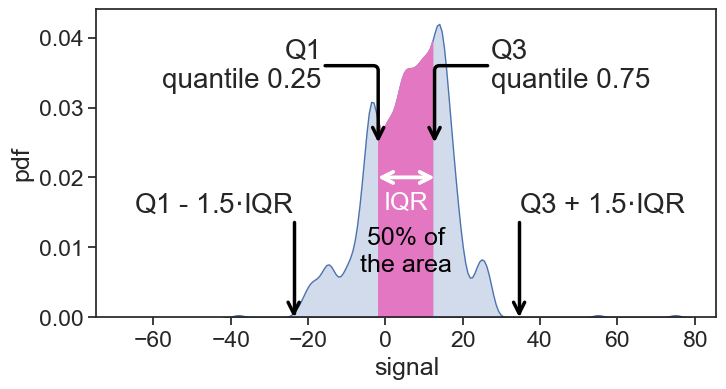
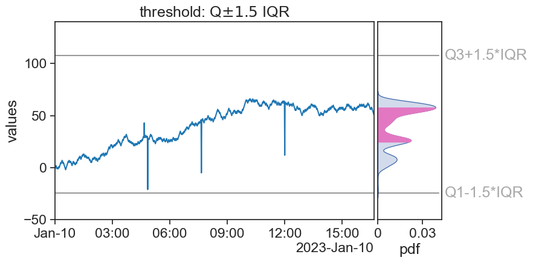

import matplotlib.pyplot as plt
import warnings
import pandas as pd
import numpy as np
import seaborn as sns
sns.set(style="ticks", font_scale=1.5) # white graphs, with large and legible letters
warnings.simplefilter(action='ignore', category=FutureWarning)
import matplotlib.gridspec as gridspec
from matplotlib.dates import DateFormatter
import matplotlib.dates as mdates
from scipy.stats import median_abs_deviation59 outliers graphs
https://www.google.com/imgres?imgurl=https%3A%2F%2Fcxl.com%2Fwp-content%2Fuploads%2F2017%2F01%2Fchart-1.png&tbnid=RClfEFYNWm0WWM&vet=12ahUKEwjsx9KiqtKDAxXwh_0HHQR0CPoQMygSegQIARB1..i&imgrefurl=https%3A%2F%2Fcxl.com%2Fblog%2Foutliers%2F&docid=EVGldozQCNsxLM&w=1662&h=722&q=outliers%20different%20distributions&client=safari&ved=2ahUKEwjsx9KiqtKDAxXwh_0HHQR0CPoQMygSegQIARB1
source: https://github.com/erykml/medium_articles/blob/master/Machine%20Learning/outlier_detection_hampel_filter.ipynb
59.1 define functions
def random_walk_with_outliers(origin, n_steps, perc_outliers=0.0, outlier_mult=10, seed=42):
'''
Function for generating a random time series based on random walk.
It adds a specified percentage of outliers by multiplying the random walk step by a scalar.
Parameters
------------
origin : int
The starting point of the series
n_steps : int
Lenght of the series
perc_outliers : float
Percentage of outliers to introduce to the series [0.0-1.0]
outlier_mult : float
Scalar by which to multiply the RW increment to create an outlier
seed : int
Random seed
Returns
-----------
rw : np.ndarray
The generated random walk series with outliers
indices : np.ndarray
The indices of the introduced outliers
'''
assert (perc_outliers >= 0.0) & (perc_outliers <= 1.0)
#set seed for reproducibility
np.random.seed(seed)
# possible steps
steps = [-1, 1]
# simulate steps
steps = np.random.choice(a=steps, size=n_steps-1)
rw = np.append(origin, steps).cumsum(0)
# add outliers
n_outliers = int(np.round(perc_outliers * n_steps, 0))
indices = np.random.randint(0, len(rw), n_outliers)
rw[indices] = rw[indices] + steps[indices + 1] * outlier_mult
return rw, indices
def concise(ax):
locator = mdates.AutoDateLocator(minticks=3, maxticks=7)
formatter = mdates.ConciseDateFormatter(locator)
ax.xaxis.set_major_locator(locator)
ax.xaxis.set_major_formatter(formatter)59.2 load and process data
start = '2023-01-10 00:00:00'
n_steps = 1000
rw39, outlier_ind39 = random_walk_with_outliers(origin=0,
n_steps=n_steps,
perc_outliers=0.0031,
outlier_mult=50,
seed=39)
date_range = pd.date_range(start, periods=n_steps, freq='1min')
df = pd.DataFrame({'date': date_range, 'signal': rw39}).set_index('date')
start = df.index[0]
end = df.index[-1]59.3 stationary signal
59.4 visual inspection
fig, ax = plt.subplots(figsize=(8,4))
# plot signal
ax.plot(df['signal'], color="tab:blue")
# plot horizontal lines
ax.plot([start, end], [40]*2, color="black", alpha=0.4)
ax.text(end, 40, " 40", va="center")
ax.plot([start, end], [-30]*2, color="black", alpha=0.4)
ax.text(end, -30, " -30", va="center")
# find and plot outliers
outliers_index = df.index[(df['signal'] > 40) | (df['signal'] < -30)]
ax.plot(df.loc[outliers_index, 'signal'], ls='None',
marker='o', markerfacecolor='yellow', markersize=5,
markeredgecolor="black")
# make graph look nice
ax.set(ylabel='values',
xlim=[start,end],
title="visual inspection",
ylim=[-45, 80])
concise(ax)
fig.savefig("outliers_visual_inspection.png", bbox_inches='tight')
59.5 mean +- 3 std
fig, ax = plt.subplots(figsize=(8,4))
gs = gridspec.GridSpec(1, 2, width_ratios=[1, 0.2], height_ratios=[1])
gs.update(left=0.10, right=0.90, top=0.95, bottom=0.13,
hspace=0.02, wspace=0.02)
ax0 = plt.subplot(gs[0, 0])
ax1 = plt.subplot(gs[0, 1])
avg = df['signal'].mean()
std = df['signal'].std()
# plot signal
ax0.plot(df['signal'], color="tab:blue")
sns.kdeplot(data=df, y='signal', shade=True, ax=ax1)
pdf_xlim = ax1.get_xlim()
# plot horizontal lines
# mean
ax0.plot([start, end], [avg]*2, color="black", zorder=-10, alpha=0.7)
ax1.plot(pdf_xlim, [avg]*2, color="black", alpha=0.7)
ax1.text(1.1*pdf_xlim[1], avg, "mean", va="center")
# mean + std
ax0.plot([start, end], [avg+std]*2, color="black", alpha=0.4)
ax1.plot(pdf_xlim, [avg+std]*2, color="black", alpha=0.4)
ax1.text(1.1*pdf_xlim[1], avg+std, r"mean$+$std", va="center", alpha=0.4)
# mean - std
ax0.plot([start, end], [avg-std]*2, color="black", alpha=0.4)
ax1.plot(pdf_xlim, [avg-std]*2, color="black", alpha=0.4)
ax1.text(1.1*pdf_xlim[1], avg-std, r"mean$-$std", va="center", alpha=0.4)
n_sigma = 3
# mean + 3std
ax0.plot([start, end], [avg+n_sigma*std]*2, color="tab:red")
ax1.plot(pdf_xlim, [avg+n_sigma*std]*2, color="tab:red")
ax1.text(1.1*pdf_xlim[1], avg+n_sigma*std, r"mean$+3\cdot$std", va="center", color="tab:red")
# mean - 3std
ax0.plot([start, end], [avg-n_sigma*std]*2, color="tab:red")
ax1.plot(pdf_xlim, [avg-n_sigma*std]*2, color="tab:red")
ax1.text(1.1*pdf_xlim[1], avg-n_sigma*std, r"mean$-3\cdot$std", va="center", color="tab:red")
# find and plot outliers
outliers_index = df.index[(df['signal'] > avg + n_sigma*std) |
(df['signal'] < avg - n_sigma*std)
]
ax0.plot(df.loc[outliers_index, 'signal'], ls='None',
marker='o', markerfacecolor='yellow', markersize=5,
markeredgecolor="black")
# make graph look nice
ax0.set(ylabel='values',
xlim=[start,end],
ylim=[-45, 80],
title=r"threshold: mean $\pm3$ std",
)
concise(ax0)
ax1.set(xlabel='pdf',
ylabel='',
ylim=[-45, 80],
yticks=[],
xticks=[0, 0.03],
xticklabels=['0', '0.03']
)
fig.savefig("outliers_3sigma.png", bbox_inches='tight')/var/folders/c3/7hp0d36n6vv8jc9hm2440__00000gn/T/ipykernel_73326/653833997.py:6: MatplotlibDeprecationWarning: Auto-removal of overlapping axes is deprecated since 3.6 and will be removed two minor releases later; explicitly call ax.remove() as needed.
ax0 = plt.subplot(gs[0, 0])59.6 IQR
# get kdeplot data
fig, ax = plt.subplots(figsize=(8,4))
my_kde = sns.kdeplot(df['signal'], bw_adjust=0.5)
line = my_kde.lines[0]
kde_vals, kde_pdf = line.get_data()
kde_cdf = np.cumsum(kde_pdf) / np.sum(kde_pdf)
def find_nearest(array, value):
return (np.abs(array - value)).argmin()
# Find the boundaries where the KDE is 25% and 75% of the area
Q1_index = find_nearest(kde_cdf, 0.25)
Q1_boundary = kde_vals[Q1_index]
Q3_index = find_nearest(kde_cdf, 0.75)
Q3_boundary = kde_vals[Q3_index]
IQR = Q3_boundary - Q1_boundaryfig, ax = plt.subplots(figsize=(8,4))
sns.kdeplot(df['signal'], ax=ax, shade=True, bw_adjust=0.5)
ax.fill_between(x=kde_vals[Q1_index:Q3_index],
y1=kde_pdf[Q1_index:Q3_index],
color="tab:pink"
)
h = 0.02
ax.annotate("",
xy=(Q1_boundary, h), xycoords='data',
xytext=(Q3_boundary, h), textcoords='data',
size=20,
arrowprops=dict(arrowstyle="<->",
connectionstyle="arc3,rad=0.0",
shrinkA=0, shrinkB=0,
linewidth=2.5
),
)
ax.annotate("",
xy=(Q1_boundary, h), xycoords='data',
xytext=(Q3_boundary, h), textcoords='data',
size=20,
arrowprops=dict(arrowstyle="<->",
connectionstyle="arc3,rad=0.0",
shrinkA=0, shrinkB=0,
linewidth=2.5
),
)
ax.annotate("Q1\nquantile 0.25",
xy=(Q1_boundary, 0.025), xycoords='data',
xytext=(Q1_boundary-IQR, 0.040), textcoords='data',
size=20,
ha="right",
va="top",
arrowprops=dict(arrowstyle="->",
connectionstyle="angle,angleA=0,angleB=90,rad=5",
shrinkA=0, shrinkB=0,
linewidth=2.5,
color="black"
),
)
ax.annotate("Q3\nquantile 0.75",
xy=(Q3_boundary, 0.025), xycoords='data',
xytext=(Q3_boundary+IQR, 0.040), textcoords='data',
size=20,
ha="left",
va="top",
arrowprops=dict(arrowstyle="->",
connectionstyle="angle,angleA=0,angleB=90,rad=5",
shrinkA=0, shrinkB=0,
linewidth=2.5,
color="black"
),
)
ax.annotate(r"Q3 + 1.5$\cdot$IQR",
xy=(Q3_boundary+1.5*IQR, 0.00), xycoords='data',
xytext=(Q3_boundary+1.5*IQR, 0.015), textcoords='data',
size=20,
ha="left",
arrowprops=dict(arrowstyle="->",
connectionstyle="angle,angleA=0,angleB=90,rad=5",
shrinkA=0, shrinkB=0,
linewidth=2.5,
color="black"
),
)
ax.annotate(r"Q1 - 1.5$\cdot$IQR",
xy=(Q1_boundary-1.5*IQR, 0.00), xycoords='data',
xytext=(Q1_boundary-1.5*IQR, 0.015), textcoords='data',
size=20,
ha="right",
arrowprops=dict(arrowstyle="->",
connectionstyle="angle,angleA=0,angleB=90,rad=5",
shrinkA=0, shrinkB=0,
linewidth=2.5,
color="black"
),
)
ax.text(Q1_boundary+IQR/2, 0.018, "IQR",
ha="center", va="top", color="white")
ax.text(Q1_boundary+IQR/2, 0.013, r"50% of"+"\nthe area",
ha="center", va="top", color="black")
ax.set(xlim=[Q1_boundary-5*IQR, Q3_boundary+5*IQR],
ylabel="pdf",)
fig.savefig("IQR_pdf.png", bbox_inches='tight')
fig, ax = plt.subplots(figsize=(8,4))
gs = gridspec.GridSpec(1, 2, width_ratios=[1, 0.2], height_ratios=[1])
gs.update(left=0.10, right=0.90, top=0.95, bottom=0.13,
hspace=0.02, wspace=0.02)
ax0 = plt.subplot(gs[0, 0])
ax1 = plt.subplot(gs[0, 1])
median = df['signal'].quantile(0.50)
Q1 = df['signal'].quantile(0.25)
Q3 = df['signal'].quantile(0.75)
IQR = Q3 - Q1
# plot signal
ax0.plot(df['signal'], color="tab:blue")
my_kde = sns.kdeplot(data=df, y='signal', shade=True, ax=ax1, bw_adjust=0.5)
pdf_xlim =ax1.get_xlim()
kde_q1_idx = find_nearest(kde_vals, Q1)
kde_q3_idx = find_nearest(kde_vals, Q3)
ax1.fill_betweenx(y=kde_vals[kde_q1_idx:kde_q3_idx],
x1=kde_pdf[kde_q1_idx:kde_q3_idx],
color="tab:pink")
# plot horizontal lines
# Q3 + 1.5 IQR
ax0.plot([start, end], [Q3+1.5*IQR]*2, color="black", alpha=0.4)
ax1.plot(pdf_xlim, [Q3+1.5*IQR]*2, color="black", alpha=0.4)
ax1.text(1.1*pdf_xlim[1], Q3+1.5*IQR, "Q3+1.5*IQR", va="center", alpha=0.4)
# Q1 - 1.5 IQR
ax0.plot([start, end], [Q1-1.5*IQR]*2, color="black", alpha=0.4)
ax1.plot(pdf_xlim, [Q1-1.5*IQR]*2, color="black", alpha=0.4)
ax1.text(1.1*pdf_xlim[1], Q1-1.5*IQR, "Q1-1.5*IQR", va="center", alpha=0.4)
# find and plot outliers
outliers_index = df.index[(df['signal'] > Q3+1.5*IQR) |
(df['signal'] < Q1-1.5*IQR)
]
ax0.plot(df.loc[outliers_index, 'signal'], ls='None',
marker='o', markerfacecolor='yellow', markersize=5,
markeredgecolor="black")
# make graph look nice
ax0.set(ylabel='values',
xlim=[start,end],
ylim=[-45, 80],
title=r"threshold: Q$\pm1.5$ IQR",
)
concise(ax0)
ax1.set(xlabel='pdf',
ylabel='',
ylim=[-45, 80],
yticks=[],
xticks=[0, 0.03],
xticklabels=['0', '0.03']
)
fig.savefig("outliers_1.5IQR.png", bbox_inches='tight')/var/folders/c3/7hp0d36n6vv8jc9hm2440__00000gn/T/ipykernel_73326/3077230861.py:6: MatplotlibDeprecationWarning: Auto-removal of overlapping axes is deprecated since 3.6 and will be removed two minor releases later; explicitly call ax.remove() as needed.
ax0 = plt.subplot(gs[0, 0])
59.7 non stationary signal

59.8 running +- 3 std
fig, ax = plt.subplots(figsize=(8,4))
gs = gridspec.GridSpec(1, 2, width_ratios=[1, 0.2], height_ratios=[1])
gs.update(left=0.10, right=0.90, top=0.95, bottom=0.13,
hspace=0.02, wspace=0.02)
ax0 = plt.subplot(gs[0, 0])
ax1 = plt.subplot(gs[0, 1])
avg = df['signal40'].mean()
std = df['signal40'].std()
# plot signal
ax0.plot(df['signal40'], color="tab:blue")
sns.kdeplot(data=df, y='signal40', shade=True, ax=ax1)
# plot horizontal lines
# mean
ax0.plot([start, end], [avg]*2, color="black", zorder=-10, alpha=0.7)
ax1.plot(pdf_xlim, [avg]*2, color="black", alpha=0.7)
ax1.text(1.1*pdf_xlim[1], avg, "mean", va="center")
# mean + std
ax0.plot([start, end], [avg+std]*2, color="black", alpha=0.4)
ax1.plot(pdf_xlim, [avg+std]*2, color="black", alpha=0.4)
ax1.text(1.1*pdf_xlim[1], avg+std, "mean+std", va="center", alpha=0.4)
# mean - std
ax0.plot([start, end], [avg-std]*2, color="black", alpha=0.4)
ax1.plot(pdf_xlim, [avg-std]*2, color="black", alpha=0.4)
ax1.text(1.1*pdf_xlim[1], avg-std, "mean-std", va="center", alpha=0.4)
n_sigma = 3
# mean + 3std
ax0.plot([start, end], [avg+n_sigma*std]*2, color="tab:red")
ax1.plot(pdf_xlim, [avg+n_sigma*std]*2, color="tab:red")
ax1.text(1.1*pdf_xlim[1], avg+n_sigma*std, r"mean $+3\times$std", va="center", color="tab:red")
# mean - 3std
ax0.plot([start, end], [avg-n_sigma*std]*2, color="tab:red")
ax1.plot(pdf_xlim, [avg-n_sigma*std]*2, color="tab:red")
ax1.text(1.1*pdf_xlim[1], avg-n_sigma*std, r"mean $-3\times$std", va="center", color="tab:red")
# find and plot outliers
outliers_index = df.index[(df['signal40'] > avg + n_sigma*std) |
(df['signal40'] < avg - n_sigma*std)
]
ax0.plot(df.loc[outliers_index, 'signal40'], ls='None',
marker='o', markerfacecolor='yellow', markersize=5,
markeredgecolor="black")
# make graph look nice
ax0.set(ylabel='values',
xlim=[start,end],
ylim=[-45, 120],
title=r"threshold: mean $\pm3$ std",
)
concise(ax0)
ax1.set(xlabel='pdf',
ylabel='',
ylim=[-45, 120],
yticks=[],
xticks=[0, 0.03],
xticklabels=['0', '0.03']
)
fig.savefig("outliers_3sigma_seed40.png", bbox_inches='tight')/var/folders/c3/7hp0d36n6vv8jc9hm2440__00000gn/T/ipykernel_73326/372016966.py:6: MatplotlibDeprecationWarning: Auto-removal of overlapping axes is deprecated since 3.6 and will be removed two minor releases later; explicitly call ax.remove() as needed.
ax0 = plt.subplot(gs[0, 0])
fig, ax = plt.subplots(figsize=(8,4))
gs = gridspec.GridSpec(1, 2, width_ratios=[1, 0.2], height_ratios=[1])
gs.update(left=0.10, right=0.90, top=0.95, bottom=0.13,
hspace=0.02, wspace=0.02)
ax0 = plt.subplot(gs[0, 0])
ax1 = plt.subplot(gs[0, 1])
avg = df['signal40'].mean()
std = df['signal40'].std()
# plot signal
ax0.plot(df['signal40'], color="tab:blue")
sns.kdeplot(data=df, y='signal40', shade=True, ax=ax1)
# mean
ax0.plot(df['signal40_rol_mean'], color="black", alpha=0.7, label="mean")
# mean +- 3 std
n_sigma = 3
ax0.plot(df['signal40_rol_mean']+ n_sigma*df['signal40_rol_std'], color="tab:red")
plot_threshold, = ax0.plot(df['signal40_rol_mean']- n_sigma*df['signal40_rol_std'],
color="tab:red", label="threshold")
# find and plot outliers
outliers_index = df.index[(df['signal40'] > df['signal40_rol_mean']+ n_sigma*df['signal40_rol_std']) |
(df['signal40'] < df['signal40_rol_mean']- n_sigma*df['signal40_rol_std'])
]
ax0.plot(df.loc[outliers_index, 'signal40'], ls='None',
marker='o', markerfacecolor='yellow', markersize=5,
markeredgecolor="black")
# make graph look nice
ax0.set(ylabel='values',
xlim=[start,end],
ylim=[-45, 120],
title=r"1-hour rolling window: mean $\pm3$ std",
)
concise(ax0)
ax1.set(xlabel='pdf',
ylabel='',
ylim=[-45, 120],
yticks=[],
xticks=[0, 0.03],
xticklabels=['0', '0.03']
)
ax0.legend(frameon=False, loc="upper left")
fig.savefig("outliers_rolling_3std.png", bbox_inches='tight')/var/folders/c3/7hp0d36n6vv8jc9hm2440__00000gn/T/ipykernel_73326/142534422.py:6: MatplotlibDeprecationWarning: Auto-removal of overlapping axes is deprecated since 3.6 and will be removed two minor releases later; explicitly call ax.remove() as needed.
ax0 = plt.subplot(gs[0, 0])59.9 running: Q +- IQR
fig, ax = plt.subplots(figsize=(8,4))
my_kde = sns.kdeplot(df['signal40'], bw_adjust=0.5)
line = my_kde.lines[0]
kde_vals, kde_pdf = line.get_data()
kde_cdf = np.cumsum(kde_pdf) / np.sum(kde_pdf)fig, ax = plt.subplots(figsize=(8,4))
gs = gridspec.GridSpec(1, 2, width_ratios=[1, 0.2], height_ratios=[1])
gs.update(left=0.10, right=0.90, top=0.95, bottom=0.13,
hspace=0.02, wspace=0.02)
ax0 = plt.subplot(gs[0, 0])
ax1 = plt.subplot(gs[0, 1])
median = df['signal40'].quantile(0.50)
Q1 = df['signal40'].quantile(0.25)
Q3 = df['signal40'].quantile(0.75)
IQR = Q3 - Q1
# plot signal
ax0.plot(df['signal40'], color="tab:blue")
my_kde = sns.kdeplot(data=df, y='signal40', shade=True, ax=ax1, bw_adjust=0.5)
pdf_xlim =ax1.get_xlim()
kde_q1_idx = find_nearest(kde_vals, Q1)
kde_q3_idx = find_nearest(kde_vals, Q3)
ax1.fill_betweenx(y=kde_vals[kde_q1_idx:kde_q3_idx],
x1=kde_pdf[kde_q1_idx:kde_q3_idx],
color="tab:pink")
# plot horizontal lines
# Q3 + 1.5 IQR
ax0.plot([start, end], [Q3+1.5*IQR]*2, color="black", alpha=0.4)
ax1.plot(pdf_xlim, [Q3+1.5*IQR]*2, color="black", alpha=0.4)
ax1.text(1.1*pdf_xlim[1], Q3+1.5*IQR, "Q3+1.5*IQR", va="center", alpha=0.4)
# Q1 - 1.5 IQR
ax0.plot([start, end], [Q1-1.5*IQR]*2, color="black", alpha=0.4)
ax1.plot(pdf_xlim, [Q1-1.5*IQR]*2, color="black", alpha=0.4)
ax1.text(1.1*pdf_xlim[1], Q1-1.5*IQR, "Q1-1.5*IQR", va="center", alpha=0.4)
# find and plot outliers
outliers_index = df.index[(df['signal40'] > Q3+1.5*IQR) |
(df['signal40'] < Q1-1.5*IQR)
]
ax0.plot(df.loc[outliers_index, 'signal40'], ls='None',
marker='o', markerfacecolor='yellow', markersize=5,
markeredgecolor="black")
# make graph look nice
ax0.set(ylabel='values',
xlim=[start,end],
ylim=[-50, 140],
title=r"threshold: Q$\pm1.5$ IQR",
)
concise(ax0)
ax1.set(xlabel='pdf',
ylabel='',
ylim=[-50, 140],
yticks=[],
xticks=[0, 0.03],
xticklabels=['0', '0.03']
)
fig.savefig("outliers_1.5IQR_seed40.png", bbox_inches='tight')/var/folders/c3/7hp0d36n6vv8jc9hm2440__00000gn/T/ipykernel_73326/678430211.py:6: MatplotlibDeprecationWarning: Auto-removal of overlapping axes is deprecated since 3.6 and will be removed two minor releases later; explicitly call ax.remove() as needed.
ax0 = plt.subplot(gs[0, 0])
fig, ax = plt.subplots(figsize=(8,4))
gs = gridspec.GridSpec(1, 2, width_ratios=[1, 0.2], height_ratios=[1])
gs.update(left=0.10, right=0.90, top=0.95, bottom=0.13,
hspace=0.02, wspace=0.02)
ax0 = plt.subplot(gs[0, 0])
ax1 = plt.subplot(gs[0, 1])
avg = df['signal40'].mean()
std = df['signal40'].std()
# plot signal
ax0.plot(df['signal40'], color="tab:blue")
sns.kdeplot(data=df, y='signal40', shade=True, ax=ax1)
# median
# ax0.plot(df['signal40_rol_median'], color="black", alpha=0.7, label="median")
# Q1 - 1.5 IQR
threshold_bottom = df['signal40_rol_Q1'] - 1.5*df['signal40_rol_IQR']
ax0.plot(threshold_bottom, color="tab:red")
# Q3 + 1.5 IQR
threshold_top = df['signal40_rol_Q3'] + 1.5*df['signal40_rol_IQR']
ax0.plot(threshold_top, color="tab:red")
# find and plot outliers
outliers_index = df.index[(df['signal40'] > threshold_top) |
(df['signal40'] < threshold_bottom)
]
ax0.plot(df.loc[outliers_index, 'signal40'], ls='None',
marker='o', markerfacecolor='yellow', markersize=5,
markeredgecolor="black")
# make graph look nice
ax0.set(ylabel='values',
xlim=[start,end],
ylim=[-45, 120],
title=r"1-hour rolling threshold: Q $\pm1.5$ IQR",
)
concise(ax0)
ax1.set(xlabel='pdf',
ylabel='',
ylim=[-45, 120],
yticks=[],
xticks=[0, 0.03],
xticklabels=['0', '0.03']
)
ax0.legend(frameon=False, loc="upper left")
fig.savefig("outliers_rolling_IQR.png", bbox_inches='tight')/var/folders/c3/7hp0d36n6vv8jc9hm2440__00000gn/T/ipykernel_73326/3108172465.py:6: MatplotlibDeprecationWarning: Auto-removal of overlapping axes is deprecated since 3.6 and will be removed two minor releases later; explicitly call ax.remove() as needed.
ax0 = plt.subplot(gs[0, 0])
No artists with labels found to put in legend. Note that artists whose label start with an underscore are ignored when legend() is called with no argument.59.10 Hampel, running MAD
fig, ax = plt.subplots(figsize=(8,4))
gs = gridspec.GridSpec(1, 2, width_ratios=[1, 0.2], height_ratios=[1])
gs.update(left=0.10, right=0.90, top=0.95, bottom=0.13,
hspace=0.02, wspace=0.02)
ax0 = plt.subplot(gs[0, 0])
ax1 = plt.subplot(gs[0, 1])
# plot signal
ax0.plot(df['signal40'], color="tab:blue")
sns.kdeplot(data=df, y='signal40', shade=True, ax=ax1)
# median
# ax0.plot(df['signal40_rol_median'], color="black", alpha=0.7, label="median")
# Q1 - 1.5 IQR
threshold_bottom = df['signal40_rol_median'] - 3 * df['signal40_rol_mad']
ax0.plot(threshold_bottom, color="tab:red")
# Q3 + 1.5 IQR
threshold_top = df['signal40_rol_median'] + 3 * df['signal40_rol_mad']
ax0.plot(threshold_top, color="tab:red")
# find and plot outliers
outliers_index = df.index[(df['signal40'] > threshold_top) |
(df['signal40'] < threshold_bottom)
]
ax0.plot(df.loc[outliers_index, 'signal40'], ls='None',
marker='o', markerfacecolor='yellow', markersize=5,
markeredgecolor="black")
# make graph look nice
ax0.set(ylabel='values',
xlim=[start,end],
ylim=[-45, 120],
title=r"1-hour rolling threshold: median $\pm3$ MAD",
)
concise(ax0)
ax1.set(xlabel='pdf',
ylabel='',
ylim=[-45, 120],
yticks=[],
xticks=[0, 0.03],
xticklabels=['0', '0.03']
)
ax0.legend(frameon=False, loc="upper left")
fig.savefig("outliers_rolling_MAD.png", bbox_inches='tight')/var/folders/c3/7hp0d36n6vv8jc9hm2440__00000gn/T/ipykernel_73326/3446982039.py:6: MatplotlibDeprecationWarning: Auto-removal of overlapping axes is deprecated since 3.6 and will be removed two minor releases later; explicitly call ax.remove() as needed.
ax0 = plt.subplot(gs[0, 0])
No artists with labels found to put in legend. Note that artists whose label start with an underscore are ignored when legend() is called with no argument.59.11 stationary MAD
fig, ax = plt.subplots(figsize=(8,4))
# plot signal
ax.plot(df['signal'], color="tab:blue")
k = 1.4826 # scale factor for Gaussian distribution
mad = median_abs_deviation(df['signal'])
median = df['signal'].median()
xlim = ax.get_xlim()
# median +- 3*k*mad
ax.plot([start, end], [median]*2, color="black")
# ax.text(1.1, median, "median", va="center", transform=ax.transAxes,)
threshold_top = median+3*k*mad
threshold_bottom = median-3*k*mad
ax.plot([start, end], [threshold_bottom]*2, color="black", alpha=0.4)
ax.plot([start, end], [threshold_top]*2, color="black", alpha=0.4)
ax.annotate("median", xy=(1.02, median), xycoords=('axes fraction', 'data'),
va='center')
ax.annotate(r"median$+3k\cdot$MAD", xy=(1.02, threshold_top), xycoords=('axes fraction', 'data'),
va='center')
ax.annotate(r"median$-3k\cdot$MAD", xy=(1.02, threshold_bottom), xycoords=('axes fraction', 'data'),
va='center')
# find and plot outliers
outliers_index = df.index[(df['signal'] > threshold_top) |
(df['signal'] < threshold_bottom)
]
ax.plot(df.loc[outliers_index, 'signal'], ls='None',
marker='o', markerfacecolor='yellow', markersize=5,
markeredgecolor="black")
# make graph look nice
ax.set(ylabel='values',
xlim=[start,end],
title="a stationary signal",
ylim=[-45, 80])
concise(ax)
fig.savefig("outliers_MAD_stationary.png", bbox_inches='tight')59.12 save data as csv for later usage
start = '2023-01-01 00:00:00'
end = '2023-12-31 23:55:00'
# date_range = pd.date_range(start, end, freq='5min')
date_range = pd.date_range(start, end, freq='1D')
n_steps = len(date_range)
rw39, outlier_ind39 = random_walk_with_outliers(origin=0,
n_steps=n_steps,
perc_outliers=0.0031,
outlier_mult=50,
seed=39)
# date_range = pd.date_range(start, periods=n_steps, freq='1min')
df = pd.DataFrame({'date': date_range, 'A': rw39}).set_index('date')%matplotlib widget
fig, ax = plt.subplots(figsize=(8,4))
df['Adiff'] = df['A'].diff()
ax.plot(df['A'])
ax.plot(df['Adiff'])date
2023-03-03 0.0
2023-03-04 0.0
2023-03-05 0.0
2023-03-06 0.0
Name: Adiff, dtype: float64df['mask1'] = df['Adiff'].rolling(n_consecutive).apply(n_zeros, args=(n_consecutive,))
df['mask'] = 0.0
for i in range(len(df)):
if df['mask1'][i] == 1.0:
df['mask'][i-n_consecutive:i+1] = 1.0/var/folders/kv/9cqw3y_s6c75xmgqm9n0t5d40000gn/T/ipykernel_6180/2921310703.py:5: SettingWithCopyWarning:
A value is trying to be set on a copy of a slice from a DataFrame
See the caveats in the documentation: https://pandas.pydata.org/pandas-docs/stable/user_guide/indexing.html#returning-a-view-versus-a-copy
df['mask'][i-n_consecutive:i+1] = 1.0df['mask'] = 0.0
for j in range(len(df)-n_consecutive):
if (df['Adiff'][j:j+n_consecutive] == np.zeros(n_consecutive)).all():
df['mask'][j:j+n_consecutive] = 1.0/var/folders/kv/9cqw3y_s6c75xmgqm9n0t5d40000gn/T/ipykernel_6180/2364603426.py:4: SettingWithCopyWarning:
A value is trying to be set on a copy of a slice from a DataFrame
See the caveats in the documentation: https://pandas.pydata.org/pandas-docs/stable/user_guide/indexing.html#returning-a-view-versus-a-copy
df['mask'][j:j+n_consecutive] = 1.059.13 generate datasets
def random_walk_with_outliers2(origin, steps_dist, outlier_dist, n_steps, perc_outliers=0.0, outlier_mult=10, seed=42):
'''
Function for generating a random time series based on random walk.
It adds a specified percentage of outliers by multiplying the random walk step by a scalar.
Parameters
------------
origin : int
The starting point of the series
steps_dist : list of int or float
step distribution
outlier_dist : list of int or float
outlier distribution
n_steps : int
Lenght of the series
perc_outliers : float
Percentage of outliers to introduce to the series [0.0-1.0]
outlier_mult : float
Scalar by which to multiply the RW increment to create an outlier
seed : int
Random seed
Returns
-----------
rw : np.ndarray
The generated random walk series with outliers
indices : np.ndarray
The indices of the introduced outliers
'''
assert (perc_outliers >= 0.0) & (perc_outliers <= 1.0)
#set seed for reproducibility
np.random.seed(seed)
# possible steps
# steps = [-1, 1]
# simulate steps
steps = np.random.choice(a=steps_dist, size=n_steps-1)
rw = np.append(origin, steps).cumsum(0)
# add outliers
n_outliers = int(np.round(perc_outliers * n_steps, 0))
indices = np.random.randint(0, len(rw), n_outliers)
outlier_jumps = np.random.choice(a=outlier_dist, size=n_outliers)
# rw[indices] = rw[indices] + steps[indices + 1] * outlier_mult
rw[indices] = rw[indices] + outlier_jumps
return rw, indices| A | |
|---|---|
| date | |
| 2023-01-01 | 0.000000 |
| 2023-01-02 | -0.032027 |
| 2023-01-03 | -0.586351 |
| 2023-01-04 | -1.575972 |
| 2023-01-05 | -2.726800 |
| ... | ... |
| 2023-12-27 | 6.651301 |
| 2023-12-28 | 6.415175 |
| 2023-12-29 | 7.603140 |
| 2023-12-30 | 8.668182 |
| 2023-12-31 | 8.472768 |
365 rows × 1 columns
AttributeError: 'DatetimeIndex' object has no attribute 'timestamp'| A | |
|---|---|
| date | |
| 2023-01-01 | 0.000000 |
| 2023-01-02 | -0.032027 |
| 2023-01-03 | -0.586351 |
| 2023-01-04 | -1.575972 |
| 2023-01-05 | -2.726800 |
| ... | ... |
| 2023-12-27 | 6.651301 |
| 2023-12-28 | 6.415175 |
| 2023-12-29 | 7.603140 |
| 2023-12-30 | 8.668182 |
| 2023-12-31 | 8.472768 |
365 rows × 1 columns
/var/folders/kv/9cqw3y_s6c75xmgqm9n0t5d40000gn/T/ipykernel_9222/2255542716.py:1: SettingWithCopyWarning:
A value is trying to be set on a copy of a slice from a DataFrame.
Try using .loc[row_indexer,col_indexer] = value instead
See the caveats in the documentation: https://pandas.pydata.org/pandas-docs/stable/user_guide/indexing.html#returning-a-view-versus-a-copy
df.iloc[np.random.randint(0, high=len(df), size=600)]['E'] = np.nan| A | date | unix time (s) | |
|---|---|---|---|
| date | |||
| 2023-01-01 | 0.000000 | 2023-01-01 | 1.672531e+09 |
| 2023-01-02 | -0.032027 | 2023-01-02 | 1.672618e+09 |
| 2023-01-03 | -0.586351 | 2023-01-03 | 1.672704e+09 |
| 2023-01-04 | -1.575972 | 2023-01-04 | 1.672790e+09 |
| 2023-01-05 | -2.726800 | 2023-01-05 | 1.672877e+09 |
| ... | ... | ... | ... |
| 2023-12-27 | 6.651301 | 2023-12-27 | 1.703635e+09 |
| 2023-12-28 | 6.415175 | 2023-12-28 | 1.703722e+09 |
| 2023-12-29 | 7.603140 | 2023-12-29 | 1.703808e+09 |
| 2023-12-30 | 8.668182 | 2023-12-30 | 1.703894e+09 |
| 2023-12-31 | 8.472768 | 2023-12-31 | 1.703981e+09 |
365 rows × 3 columns
| A | unix time (s) | |
|---|---|---|
| date | ||
| 2023-01-01 | 0.000000 | 1.672531e+09 |
| 2023-01-02 | -0.032027 | 1.672618e+09 |
| 2023-01-03 | -0.586351 | 1.672704e+09 |
| 2023-01-04 | -1.575972 | 1.672790e+09 |
| 2023-01-05 | -2.726800 | 1.672877e+09 |
| ... | ... | ... |
| 2023-12-27 | 6.651301 | 1.703635e+09 |
| 2023-12-28 | 6.415175 | 1.703722e+09 |
| 2023-12-29 | 7.603140 | 1.703808e+09 |
| 2023-12-30 | 8.668182 | 1.703894e+09 |
| 2023-12-31 | 8.472768 | 1.703981e+09 |
365 rows × 2 columns
date
2023-01-01 00:00:00 0.000000
2023-01-01 01:00:00 -2.027536
2023-01-01 02:00:00 -2.690617
2023-01-01 03:00:00 -1.985990
2023-01-01 04:00:00 -2.290898
...
2023-12-31 19:00:00 -74.514645
2023-12-31 20:00:00 -74.738058
2023-12-31 21:00:00 -75.848425
2023-12-31 22:00:00 -77.272183
2023-12-31 23:00:00 -76.557400
Name: A, Length: 8760, dtype: float64import datetime
import time
dt = datetime.datetime.now()
timestamp = time.mktime(dt.timetuple())
print(timestamp)1705330442.0time.struct_time(tm_year=2024, tm_mon=1, tm_mday=15, tm_hour=16, tm_min=54, tm_sec=2, tm_wday=0, tm_yday=15, tm_isdst=-1)AttributeError: 'numpy.ndarray' object has no attribute 'apply'array([datetime.datetime(2023, 1, 1, 0, 0),
datetime.datetime(2023, 1, 2, 0, 0),
datetime.datetime(2023, 1, 3, 0, 0),
datetime.datetime(2023, 1, 4, 0, 0),
datetime.datetime(2023, 1, 5, 0, 0),
datetime.datetime(2023, 1, 6, 0, 0),
datetime.datetime(2023, 1, 7, 0, 0),
datetime.datetime(2023, 1, 8, 0, 0),
datetime.datetime(2023, 1, 9, 0, 0),
datetime.datetime(2023, 1, 10, 0, 0),
datetime.datetime(2023, 1, 11, 0, 0),
datetime.datetime(2023, 1, 12, 0, 0),
datetime.datetime(2023, 1, 13, 0, 0),
datetime.datetime(2023, 1, 14, 0, 0),
datetime.datetime(2023, 1, 15, 0, 0),
datetime.datetime(2023, 1, 16, 0, 0),
datetime.datetime(2023, 1, 17, 0, 0),
datetime.datetime(2023, 1, 18, 0, 0),
datetime.datetime(2023, 1, 19, 0, 0),
datetime.datetime(2023, 1, 20, 0, 0),
datetime.datetime(2023, 1, 21, 0, 0),
datetime.datetime(2023, 1, 22, 0, 0),
datetime.datetime(2023, 1, 23, 0, 0),
datetime.datetime(2023, 1, 24, 0, 0),
datetime.datetime(2023, 1, 25, 0, 0),
datetime.datetime(2023, 1, 26, 0, 0),
datetime.datetime(2023, 1, 27, 0, 0),
datetime.datetime(2023, 1, 28, 0, 0),
datetime.datetime(2023, 1, 29, 0, 0),
datetime.datetime(2023, 1, 30, 0, 0),
datetime.datetime(2023, 1, 31, 0, 0),
datetime.datetime(2023, 2, 1, 0, 0),
datetime.datetime(2023, 2, 2, 0, 0),
datetime.datetime(2023, 2, 3, 0, 0),
datetime.datetime(2023, 2, 4, 0, 0),
datetime.datetime(2023, 2, 5, 0, 0),
datetime.datetime(2023, 2, 6, 0, 0),
datetime.datetime(2023, 2, 7, 0, 0),
datetime.datetime(2023, 2, 8, 0, 0),
datetime.datetime(2023, 2, 9, 0, 0),
datetime.datetime(2023, 2, 10, 0, 0),
datetime.datetime(2023, 2, 11, 0, 0),
datetime.datetime(2023, 2, 12, 0, 0),
datetime.datetime(2023, 2, 13, 0, 0),
datetime.datetime(2023, 2, 14, 0, 0),
datetime.datetime(2023, 2, 15, 0, 0),
datetime.datetime(2023, 2, 16, 0, 0),
datetime.datetime(2023, 2, 17, 0, 0),
datetime.datetime(2023, 2, 18, 0, 0),
datetime.datetime(2023, 2, 19, 0, 0),
datetime.datetime(2023, 2, 20, 0, 0),
datetime.datetime(2023, 2, 21, 0, 0),
datetime.datetime(2023, 2, 22, 0, 0),
datetime.datetime(2023, 2, 23, 0, 0),
datetime.datetime(2023, 2, 24, 0, 0),
datetime.datetime(2023, 2, 25, 0, 0),
datetime.datetime(2023, 2, 26, 0, 0),
datetime.datetime(2023, 2, 27, 0, 0),
datetime.datetime(2023, 2, 28, 0, 0),
datetime.datetime(2023, 3, 1, 0, 0),
datetime.datetime(2023, 3, 2, 0, 0),
datetime.datetime(2023, 3, 3, 0, 0),
datetime.datetime(2023, 3, 4, 0, 0),
datetime.datetime(2023, 3, 5, 0, 0),
datetime.datetime(2023, 3, 6, 0, 0),
datetime.datetime(2023, 3, 7, 0, 0),
datetime.datetime(2023, 3, 8, 0, 0),
datetime.datetime(2023, 3, 9, 0, 0),
datetime.datetime(2023, 3, 10, 0, 0),
datetime.datetime(2023, 3, 11, 0, 0),
datetime.datetime(2023, 3, 12, 0, 0),
datetime.datetime(2023, 3, 13, 0, 0),
datetime.datetime(2023, 3, 14, 0, 0),
datetime.datetime(2023, 3, 15, 0, 0),
datetime.datetime(2023, 3, 16, 0, 0),
datetime.datetime(2023, 3, 17, 0, 0),
datetime.datetime(2023, 3, 18, 0, 0),
datetime.datetime(2023, 3, 19, 0, 0),
datetime.datetime(2023, 3, 20, 0, 0),
datetime.datetime(2023, 3, 21, 0, 0),
datetime.datetime(2023, 3, 22, 0, 0),
datetime.datetime(2023, 3, 23, 0, 0),
datetime.datetime(2023, 3, 24, 0, 0),
datetime.datetime(2023, 3, 25, 0, 0),
datetime.datetime(2023, 3, 26, 0, 0),
datetime.datetime(2023, 3, 27, 0, 0),
datetime.datetime(2023, 3, 28, 0, 0),
datetime.datetime(2023, 3, 29, 0, 0),
datetime.datetime(2023, 3, 30, 0, 0),
datetime.datetime(2023, 3, 31, 0, 0),
datetime.datetime(2023, 4, 1, 0, 0),
datetime.datetime(2023, 4, 2, 0, 0),
datetime.datetime(2023, 4, 3, 0, 0),
datetime.datetime(2023, 4, 4, 0, 0),
datetime.datetime(2023, 4, 5, 0, 0),
datetime.datetime(2023, 4, 6, 0, 0),
datetime.datetime(2023, 4, 7, 0, 0),
datetime.datetime(2023, 4, 8, 0, 0),
datetime.datetime(2023, 4, 9, 0, 0),
datetime.datetime(2023, 4, 10, 0, 0),
datetime.datetime(2023, 4, 11, 0, 0),
datetime.datetime(2023, 4, 12, 0, 0),
datetime.datetime(2023, 4, 13, 0, 0),
datetime.datetime(2023, 4, 14, 0, 0),
datetime.datetime(2023, 4, 15, 0, 0),
datetime.datetime(2023, 4, 16, 0, 0),
datetime.datetime(2023, 4, 17, 0, 0),
datetime.datetime(2023, 4, 18, 0, 0),
datetime.datetime(2023, 4, 19, 0, 0),
datetime.datetime(2023, 4, 20, 0, 0),
datetime.datetime(2023, 4, 21, 0, 0),
datetime.datetime(2023, 4, 22, 0, 0),
datetime.datetime(2023, 4, 23, 0, 0),
datetime.datetime(2023, 4, 24, 0, 0),
datetime.datetime(2023, 4, 25, 0, 0),
datetime.datetime(2023, 4, 26, 0, 0),
datetime.datetime(2023, 4, 27, 0, 0),
datetime.datetime(2023, 4, 28, 0, 0),
datetime.datetime(2023, 4, 29, 0, 0),
datetime.datetime(2023, 4, 30, 0, 0),
datetime.datetime(2023, 5, 1, 0, 0),
datetime.datetime(2023, 5, 2, 0, 0),
datetime.datetime(2023, 5, 3, 0, 0),
datetime.datetime(2023, 5, 4, 0, 0),
datetime.datetime(2023, 5, 5, 0, 0),
datetime.datetime(2023, 5, 6, 0, 0),
datetime.datetime(2023, 5, 7, 0, 0),
datetime.datetime(2023, 5, 8, 0, 0),
datetime.datetime(2023, 5, 9, 0, 0),
datetime.datetime(2023, 5, 10, 0, 0),
datetime.datetime(2023, 5, 11, 0, 0),
datetime.datetime(2023, 5, 12, 0, 0),
datetime.datetime(2023, 5, 13, 0, 0),
datetime.datetime(2023, 5, 14, 0, 0),
datetime.datetime(2023, 5, 15, 0, 0),
datetime.datetime(2023, 5, 16, 0, 0),
datetime.datetime(2023, 5, 17, 0, 0),
datetime.datetime(2023, 5, 18, 0, 0),
datetime.datetime(2023, 5, 19, 0, 0),
datetime.datetime(2023, 5, 20, 0, 0),
datetime.datetime(2023, 5, 21, 0, 0),
datetime.datetime(2023, 5, 22, 0, 0),
datetime.datetime(2023, 5, 23, 0, 0),
datetime.datetime(2023, 5, 24, 0, 0),
datetime.datetime(2023, 5, 25, 0, 0),
datetime.datetime(2023, 5, 26, 0, 0),
datetime.datetime(2023, 5, 27, 0, 0),
datetime.datetime(2023, 5, 28, 0, 0),
datetime.datetime(2023, 5, 29, 0, 0),
datetime.datetime(2023, 5, 30, 0, 0),
datetime.datetime(2023, 5, 31, 0, 0),
datetime.datetime(2023, 6, 1, 0, 0),
datetime.datetime(2023, 6, 2, 0, 0),
datetime.datetime(2023, 6, 3, 0, 0),
datetime.datetime(2023, 6, 4, 0, 0),
datetime.datetime(2023, 6, 5, 0, 0),
datetime.datetime(2023, 6, 6, 0, 0),
datetime.datetime(2023, 6, 7, 0, 0),
datetime.datetime(2023, 6, 8, 0, 0),
datetime.datetime(2023, 6, 9, 0, 0),
datetime.datetime(2023, 6, 10, 0, 0),
datetime.datetime(2023, 6, 11, 0, 0),
datetime.datetime(2023, 6, 12, 0, 0),
datetime.datetime(2023, 6, 13, 0, 0),
datetime.datetime(2023, 6, 14, 0, 0),
datetime.datetime(2023, 6, 15, 0, 0),
datetime.datetime(2023, 6, 16, 0, 0),
datetime.datetime(2023, 6, 17, 0, 0),
datetime.datetime(2023, 6, 18, 0, 0),
datetime.datetime(2023, 6, 19, 0, 0),
datetime.datetime(2023, 6, 20, 0, 0),
datetime.datetime(2023, 6, 21, 0, 0),
datetime.datetime(2023, 6, 22, 0, 0),
datetime.datetime(2023, 6, 23, 0, 0),
datetime.datetime(2023, 6, 24, 0, 0),
datetime.datetime(2023, 6, 25, 0, 0),
datetime.datetime(2023, 6, 26, 0, 0),
datetime.datetime(2023, 6, 27, 0, 0),
datetime.datetime(2023, 6, 28, 0, 0),
datetime.datetime(2023, 6, 29, 0, 0),
datetime.datetime(2023, 6, 30, 0, 0),
datetime.datetime(2023, 7, 1, 0, 0),
datetime.datetime(2023, 7, 2, 0, 0),
datetime.datetime(2023, 7, 3, 0, 0),
datetime.datetime(2023, 7, 4, 0, 0),
datetime.datetime(2023, 7, 5, 0, 0),
datetime.datetime(2023, 7, 6, 0, 0),
datetime.datetime(2023, 7, 7, 0, 0),
datetime.datetime(2023, 7, 8, 0, 0),
datetime.datetime(2023, 7, 9, 0, 0),
datetime.datetime(2023, 7, 10, 0, 0),
datetime.datetime(2023, 7, 11, 0, 0),
datetime.datetime(2023, 7, 12, 0, 0),
datetime.datetime(2023, 7, 13, 0, 0),
datetime.datetime(2023, 7, 14, 0, 0),
datetime.datetime(2023, 7, 15, 0, 0),
datetime.datetime(2023, 7, 16, 0, 0),
datetime.datetime(2023, 7, 17, 0, 0),
datetime.datetime(2023, 7, 18, 0, 0),
datetime.datetime(2023, 7, 19, 0, 0),
datetime.datetime(2023, 7, 20, 0, 0),
datetime.datetime(2023, 7, 21, 0, 0),
datetime.datetime(2023, 7, 22, 0, 0),
datetime.datetime(2023, 7, 23, 0, 0),
datetime.datetime(2023, 7, 24, 0, 0),
datetime.datetime(2023, 7, 25, 0, 0),
datetime.datetime(2023, 7, 26, 0, 0),
datetime.datetime(2023, 7, 27, 0, 0),
datetime.datetime(2023, 7, 28, 0, 0),
datetime.datetime(2023, 7, 29, 0, 0),
datetime.datetime(2023, 7, 30, 0, 0),
datetime.datetime(2023, 7, 31, 0, 0),
datetime.datetime(2023, 8, 1, 0, 0),
datetime.datetime(2023, 8, 2, 0, 0),
datetime.datetime(2023, 8, 3, 0, 0),
datetime.datetime(2023, 8, 4, 0, 0),
datetime.datetime(2023, 8, 5, 0, 0),
datetime.datetime(2023, 8, 6, 0, 0),
datetime.datetime(2023, 8, 7, 0, 0),
datetime.datetime(2023, 8, 8, 0, 0),
datetime.datetime(2023, 8, 9, 0, 0),
datetime.datetime(2023, 8, 10, 0, 0),
datetime.datetime(2023, 8, 11, 0, 0),
datetime.datetime(2023, 8, 12, 0, 0),
datetime.datetime(2023, 8, 13, 0, 0),
datetime.datetime(2023, 8, 14, 0, 0),
datetime.datetime(2023, 8, 15, 0, 0),
datetime.datetime(2023, 8, 16, 0, 0),
datetime.datetime(2023, 8, 17, 0, 0),
datetime.datetime(2023, 8, 18, 0, 0),
datetime.datetime(2023, 8, 19, 0, 0),
datetime.datetime(2023, 8, 20, 0, 0),
datetime.datetime(2023, 8, 21, 0, 0),
datetime.datetime(2023, 8, 22, 0, 0),
datetime.datetime(2023, 8, 23, 0, 0),
datetime.datetime(2023, 8, 24, 0, 0),
datetime.datetime(2023, 8, 25, 0, 0),
datetime.datetime(2023, 8, 26, 0, 0),
datetime.datetime(2023, 8, 27, 0, 0),
datetime.datetime(2023, 8, 28, 0, 0),
datetime.datetime(2023, 8, 29, 0, 0),
datetime.datetime(2023, 8, 30, 0, 0),
datetime.datetime(2023, 8, 31, 0, 0),
datetime.datetime(2023, 9, 1, 0, 0),
datetime.datetime(2023, 9, 2, 0, 0),
datetime.datetime(2023, 9, 3, 0, 0),
datetime.datetime(2023, 9, 4, 0, 0),
datetime.datetime(2023, 9, 5, 0, 0),
datetime.datetime(2023, 9, 6, 0, 0),
datetime.datetime(2023, 9, 7, 0, 0),
datetime.datetime(2023, 9, 8, 0, 0),
datetime.datetime(2023, 9, 9, 0, 0),
datetime.datetime(2023, 9, 10, 0, 0),
datetime.datetime(2023, 9, 11, 0, 0),
datetime.datetime(2023, 9, 12, 0, 0),
datetime.datetime(2023, 9, 13, 0, 0),
datetime.datetime(2023, 9, 14, 0, 0),
datetime.datetime(2023, 9, 15, 0, 0),
datetime.datetime(2023, 9, 16, 0, 0),
datetime.datetime(2023, 9, 17, 0, 0),
datetime.datetime(2023, 9, 18, 0, 0),
datetime.datetime(2023, 9, 19, 0, 0),
datetime.datetime(2023, 9, 20, 0, 0),
datetime.datetime(2023, 9, 21, 0, 0),
datetime.datetime(2023, 9, 22, 0, 0),
datetime.datetime(2023, 9, 23, 0, 0),
datetime.datetime(2023, 9, 24, 0, 0),
datetime.datetime(2023, 9, 25, 0, 0),
datetime.datetime(2023, 9, 26, 0, 0),
datetime.datetime(2023, 9, 27, 0, 0),
datetime.datetime(2023, 9, 28, 0, 0),
datetime.datetime(2023, 9, 29, 0, 0),
datetime.datetime(2023, 9, 30, 0, 0),
datetime.datetime(2023, 10, 1, 0, 0),
datetime.datetime(2023, 10, 2, 0, 0),
datetime.datetime(2023, 10, 3, 0, 0),
datetime.datetime(2023, 10, 4, 0, 0),
datetime.datetime(2023, 10, 5, 0, 0),
datetime.datetime(2023, 10, 6, 0, 0),
datetime.datetime(2023, 10, 7, 0, 0),
datetime.datetime(2023, 10, 8, 0, 0),
datetime.datetime(2023, 10, 9, 0, 0),
datetime.datetime(2023, 10, 10, 0, 0),
datetime.datetime(2023, 10, 11, 0, 0),
datetime.datetime(2023, 10, 12, 0, 0),
datetime.datetime(2023, 10, 13, 0, 0),
datetime.datetime(2023, 10, 14, 0, 0),
datetime.datetime(2023, 10, 15, 0, 0),
datetime.datetime(2023, 10, 16, 0, 0),
datetime.datetime(2023, 10, 17, 0, 0),
datetime.datetime(2023, 10, 18, 0, 0),
datetime.datetime(2023, 10, 19, 0, 0),
datetime.datetime(2023, 10, 20, 0, 0),
datetime.datetime(2023, 10, 21, 0, 0),
datetime.datetime(2023, 10, 22, 0, 0),
datetime.datetime(2023, 10, 23, 0, 0),
datetime.datetime(2023, 10, 24, 0, 0),
datetime.datetime(2023, 10, 25, 0, 0),
datetime.datetime(2023, 10, 26, 0, 0),
datetime.datetime(2023, 10, 27, 0, 0),
datetime.datetime(2023, 10, 28, 0, 0),
datetime.datetime(2023, 10, 29, 0, 0),
datetime.datetime(2023, 10, 30, 0, 0),
datetime.datetime(2023, 10, 31, 0, 0),
datetime.datetime(2023, 11, 1, 0, 0),
datetime.datetime(2023, 11, 2, 0, 0),
datetime.datetime(2023, 11, 3, 0, 0),
datetime.datetime(2023, 11, 4, 0, 0),
datetime.datetime(2023, 11, 5, 0, 0),
datetime.datetime(2023, 11, 6, 0, 0),
datetime.datetime(2023, 11, 7, 0, 0),
datetime.datetime(2023, 11, 8, 0, 0),
datetime.datetime(2023, 11, 9, 0, 0),
datetime.datetime(2023, 11, 10, 0, 0),
datetime.datetime(2023, 11, 11, 0, 0),
datetime.datetime(2023, 11, 12, 0, 0),
datetime.datetime(2023, 11, 13, 0, 0),
datetime.datetime(2023, 11, 14, 0, 0),
datetime.datetime(2023, 11, 15, 0, 0),
datetime.datetime(2023, 11, 16, 0, 0),
datetime.datetime(2023, 11, 17, 0, 0),
datetime.datetime(2023, 11, 18, 0, 0),
datetime.datetime(2023, 11, 19, 0, 0),
datetime.datetime(2023, 11, 20, 0, 0),
datetime.datetime(2023, 11, 21, 0, 0),
datetime.datetime(2023, 11, 22, 0, 0),
datetime.datetime(2023, 11, 23, 0, 0),
datetime.datetime(2023, 11, 24, 0, 0),
datetime.datetime(2023, 11, 25, 0, 0),
datetime.datetime(2023, 11, 26, 0, 0),
datetime.datetime(2023, 11, 27, 0, 0),
datetime.datetime(2023, 11, 28, 0, 0),
datetime.datetime(2023, 11, 29, 0, 0),
datetime.datetime(2023, 11, 30, 0, 0),
datetime.datetime(2023, 12, 1, 0, 0),
datetime.datetime(2023, 12, 2, 0, 0),
datetime.datetime(2023, 12, 3, 0, 0),
datetime.datetime(2023, 12, 4, 0, 0),
datetime.datetime(2023, 12, 5, 0, 0),
datetime.datetime(2023, 12, 6, 0, 0),
datetime.datetime(2023, 12, 7, 0, 0),
datetime.datetime(2023, 12, 8, 0, 0),
datetime.datetime(2023, 12, 9, 0, 0),
datetime.datetime(2023, 12, 10, 0, 0),
datetime.datetime(2023, 12, 11, 0, 0),
datetime.datetime(2023, 12, 12, 0, 0),
datetime.datetime(2023, 12, 13, 0, 0),
datetime.datetime(2023, 12, 14, 0, 0),
datetime.datetime(2023, 12, 15, 0, 0),
datetime.datetime(2023, 12, 16, 0, 0),
datetime.datetime(2023, 12, 17, 0, 0),
datetime.datetime(2023, 12, 18, 0, 0),
datetime.datetime(2023, 12, 19, 0, 0),
datetime.datetime(2023, 12, 20, 0, 0),
datetime.datetime(2023, 12, 21, 0, 0),
datetime.datetime(2023, 12, 22, 0, 0),
datetime.datetime(2023, 12, 23, 0, 0),
datetime.datetime(2023, 12, 24, 0, 0),
datetime.datetime(2023, 12, 25, 0, 0),
datetime.datetime(2023, 12, 26, 0, 0),
datetime.datetime(2023, 12, 27, 0, 0),
datetime.datetime(2023, 12, 28, 0, 0),
datetime.datetime(2023, 12, 29, 0, 0),
datetime.datetime(2023, 12, 30, 0, 0),
datetime.datetime(2023, 12, 31, 0, 0)], dtype=object)DatetimeIndex(['2023-01-01', '2023-01-02', '2023-01-03', '2023-01-04',
'2023-01-05', '2023-01-06', '2023-01-07', '2023-01-08',
'2023-01-09', '2023-01-10',
...
'2023-12-22', '2023-12-23', '2023-12-24', '2023-12-25',
'2023-12-26', '2023-12-27', '2023-12-28', '2023-12-29',
'2023-12-30', '2023-12-31'],
dtype='datetime64[ns]', length=365, freq=None)